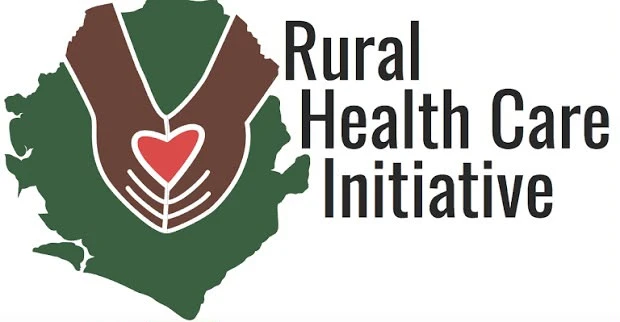
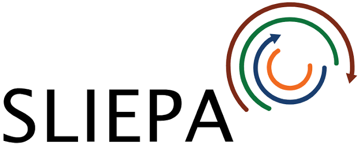
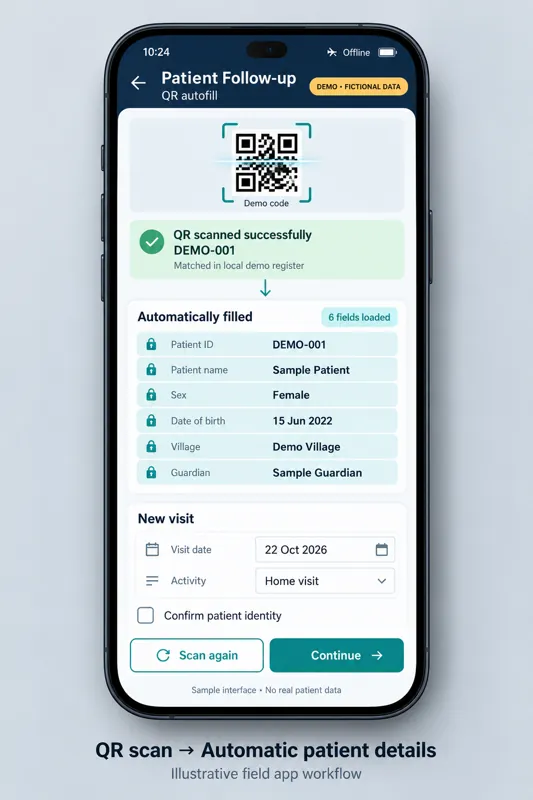
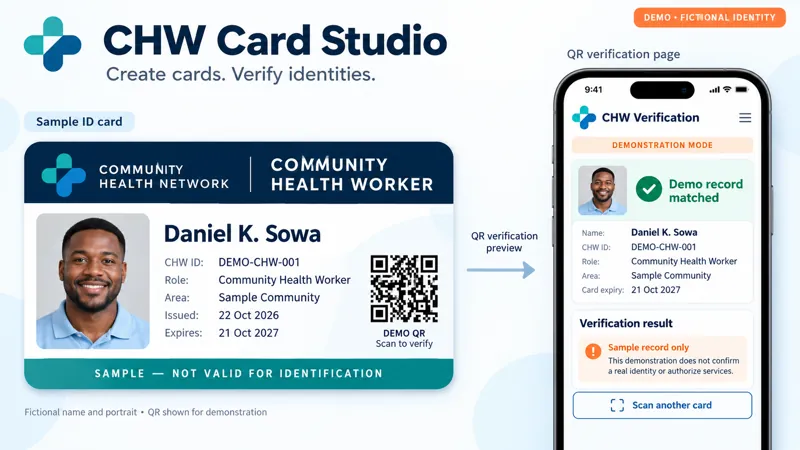

Open to consulting, contracts and roles
I help health programmes turn field data into decisions.
I am a Data Officer and M&E specialist at Rural Health Care Initiative in Bo District, Sierra Leone. I design Survey123 forms, Power BI dashboards and data systems that nurses, programme managers and donors can read at a glance.
Based in Bo, Sierra Leone. Open to roles, contracts and consulting, onsite or remote.

- Survey123
- XLSForm
- Power BI
- Excel
- PostgreSQL
- Flask
- Google Apps Script
- KoboToolbox
- ODK
- DHIS2
- WordPress


SLPPGrowth CentreWhat I do
Most of my work sits between the field and the report: getting clean data in, and getting clear answers out.
Dashboards and reporting
Power BI and Excel reports built from Survey123 exports, designed to extend as each month's data arrives.
Data collection and quality
XLSForms with lookups, validation and QR autofill, plus checks for duplicates and GPS errors.
Data systems
Databases and web tools for programmes, supplies, staff and credentials.
IT support and training
Networks, computers, backups and staff ICT training for offices, clinics and schools across Sierra Leone.
Selected work
Case studies from my work at RHCI. The screens shown are design mockups with sample data; real programme data stays with the organisation. Ask me for a walkthrough.
EPI reporting dashboard
A Power BI report built from monthly Survey123 immunisation exports, with views for nurses, management, the DHMT and donors.
BuiltSurvey123 forms and field tools
Hospitalisation notification, malaria campaign registration with QR autofill, and an offline stock dashboard.
BuiltCHW Card Studio
Credential cards with QR verification for more than 1,000 Community Health Workers.
CompletedData Management System
An 11-module system for tracking vaccine coverage and nutrition, using PostgreSQL, Flask and a PWA.
Completed EPI dashboard
EPI dashboard

QR autofill form
CHW Card Studio Data quality review
Data quality review
Sample data Design mockups. No real patient or programme data.
See how a dashboard works
Explore an interactive EPI dashboard built on sample data. Filter by facility and month, and switch between nurse, management and donor views.
How I work
Four steps, the same on every project, so you always know what happens next.
Understand the need
Who reads the report, and what decision does it support?
Design the data
Forms, fields and checks that match how the field team really works.
Build and test
Validate against real exports before anyone relies on the result.
Hand over and train
Clear documentation, so your team can run it without me.
What colleagues say
Alhaji has a remarkable ability to turn complex data challenges into simple, workable systems. His Excel dashboards transformed how we track and report health program data every month.
Reliable, fast, and always willing to go the extra mile. Alhaji kept our IT systems running smoothly and trained staff effectively during a critical period for our organization.
His networking setup gave us stable Wi-Fi across the entire office floor, something we struggled with for months. Professional, well-documented, and completed on time.
Need a dashboard, a data collection form or IT support?
Tell me what you need to report on and who will read it. I will reply with a plan and a quote.